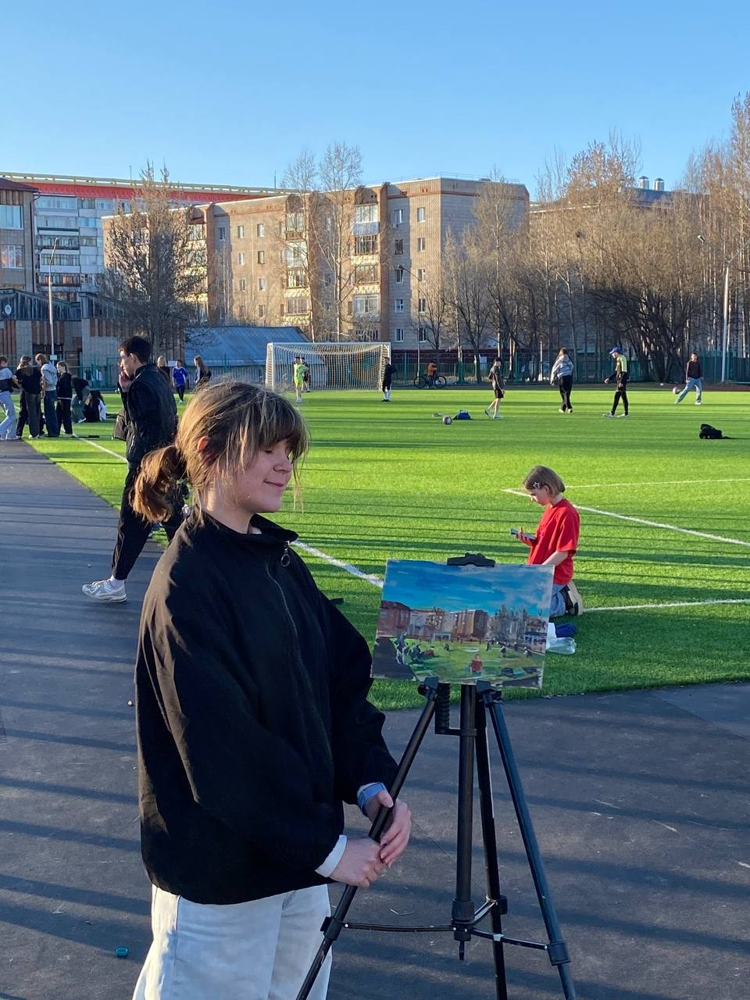
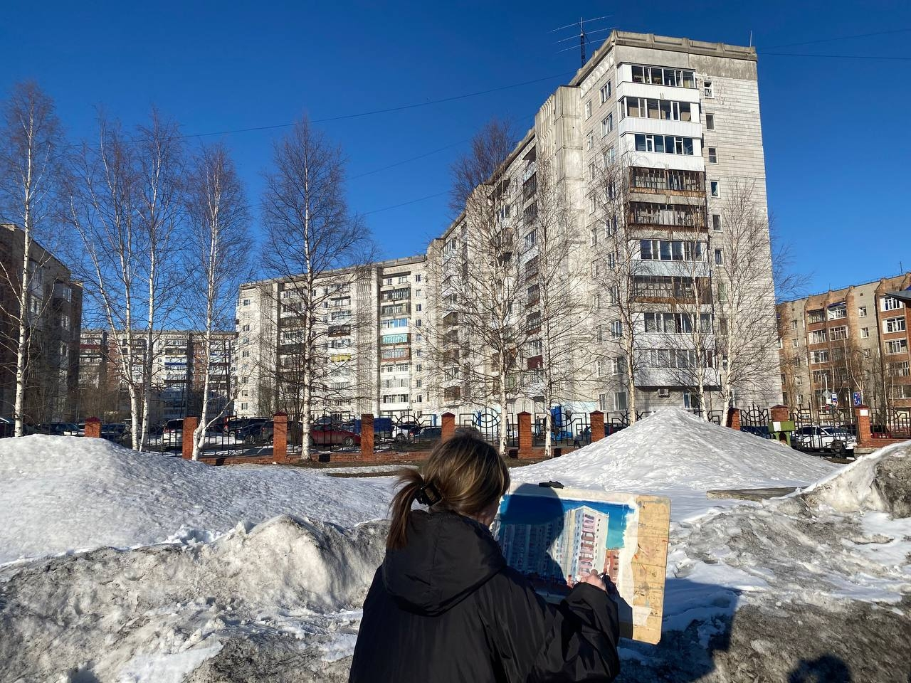
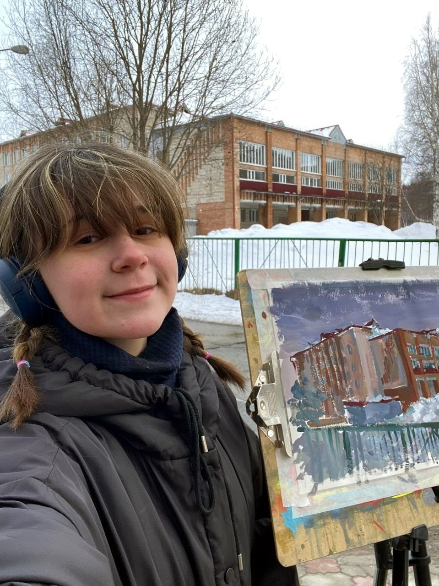

Студентка 1 курса ТГПУ
Я учусь по направлению "Декоративно-прикладное искусство и дизайн". Обожаю творчество и всё, что с ним связано!
Я очень люблю рисовать. Неважно чем — карандашом, гуашью или пастелью. Это тот процесс, где время течёт иначе, а мысли обретают тишину.
Для меня пленэр это способ расслабиться. Я беру рюкзак, этюдник, нахожу красивое или просто любимое сердцу место и сажусь смотреть. Не фотографировать, а именно прожить этот уголок — с ветром, запахами и случайными прохожими. Самое удивительное — в такие моменты мне всё равно на погоду. Дождь, снег, жара или шумная компания рядом — я всё равно могу сосредоточиться и успокоиться. Внешний мир превращается в белый шум, а остаюсь только я, кисть и бумага. Пленэр — моё любимое дело. Это занятие, где меня никто не торопит. Я просто сижу, смотрю, рисую и чувствую, как уходит тревога.
Здесь будут фотографии, как я рисую на улице



Буду рада новым знакомствам и проектам!